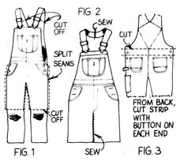
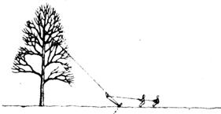

Nothing to Sneeze At
"A long time ago I heard that coarse-ground black pepper could be used to temporarily plug leaks in an automobile's cooling system," writes Ron Spears of Williamsport, Indiana. He goes on to describe how he finally got a chance to try it. "We were on a drive with friends, 90 miles from home, when a large leak developed in the car's radiator. It was late and the only service station around was closed, so we limped to a nearby roadside supermarket, where I purchased some coarse ground black pepper. I poured about half the can of pepper into the radiator, added some water, put the cap back on, started the car . . . and it worked! That pepper stopped up a 3"-long split in the top of the radiator, enabling us to make it home. After that experience, we keep a can of pepper in our car's tool kit at all times."
Overall Overhaul
Frank Barnett of Kendallville, Indiana, has discovered a way to convert worn-out bib overalls into a handy shop or garden apron. Take it away, Frank . . .
"First, cut the legs off an otherwise useless pair of bibs, just above the knees. Then split the leg seams-both inner and outer-all the way up, so that you have a completely separated front and back. Now sew the legs together, as in Fig. 2, and hem. Next, cut the shoulder straps where they're attached to the back of the overalls, and sew the cut ends together to provide one long strap with a clasp on each end. Finally, cut a strip out of the waist area of the back piece of the bibs, as shown in Fig. 3, so that you have a button on each end. This will serve as a waist strap (if it's not long enough, you can splice in a piece from one of the cutoff legs).
"You now have a durable apron with many pockets for seeds, nails, tools, and other small items . . . and you've also recycled an otherwise shot pair of overalls."
Italian Chow Mein Noodles
"I invariably cook more spaghetti noodles than I need," confesses Faye Lilley of Danville, Illinois. "But finally, recalling the dubious tale that Marco Polo brought spaghetti to Italy from China, I improvised an excellent way to recycle the unsauced strands of pasta. I drain the unused noodles thoroughly and then french fry them.
This makes the crispiest chow mein noodles I've ever had. And not only are those improvised Oriental noodles free (since I would have tossed out the leftover spaghetti from which they're made), they're also tastier than the canned variety."
Timber!
At one time or another most homesteaders and firewood cutters face the problem of how to fell a tree that's leaning in the wrong direction. David Potter-a MOTHER-reader who cuts timber in Northland, New Zealand-has devised a safe, sure way to control tree fall. David says, "Attach a rope to a sturdy limb as high in the tree as possible (directly around the trunk is even better). Back on the ground, stretch the rope out in the direction you wish the tree to fall, so that it forms a 45° angle with the ground. About ten feet from where the end of the rope will be secured to some immovable object (an iron bar driven into the ground will suffice if nothing better is available), tie a loop in the rope. After wrapping the rope once around the anchor, pass it forward through the loop and back again to where it will be held by one or more helpers. Notch the -tree on the side toward the fall, then make the felling cut on the opposite side. If the tree begins to lean in the wrong direction, the helpers can tug on the jury-rigged block and tackle to pull it back the right way."
Low-Cost Shredder
Have you always wanted a shredder to help convert those fall leaves into compost for your garden, but found the cost of even the smallest models beyond your budget? That was exactly the frustrating situation Tom Minor of Columbia, South Carolina, found himself in . . . until he hit on a workable-and economical-alternative. These days, Tom fills a large garbage can up to the midpoint with dried leaves, and uses his electric string-type lawn trimmer to shred the leaves in the can.
"It takes only a few minutes per load," Tom reports, adding that "the results are impressive. The leaves are shredded to a fine consistency and can either be added to the compost pile or spaded right into the garden."
Through the years we've all probably discovered a few Practical, down-home, time-tested solutions to the frustrating little problems of everyday life. Why not share your best "horse sense" with the rest of MOTHER's readers? Send your suggestions to Country Lore, THE Mother Earth News (restricted) , 105 Stoney Mountain Rd., Hendersonville, NC 28791. A one year subscription-or a one year extension of an existing subscription-will then be sent to each contributor whose tip is printed in this column. -MOTHER.
|
|
 |
|
|
 |
|
|